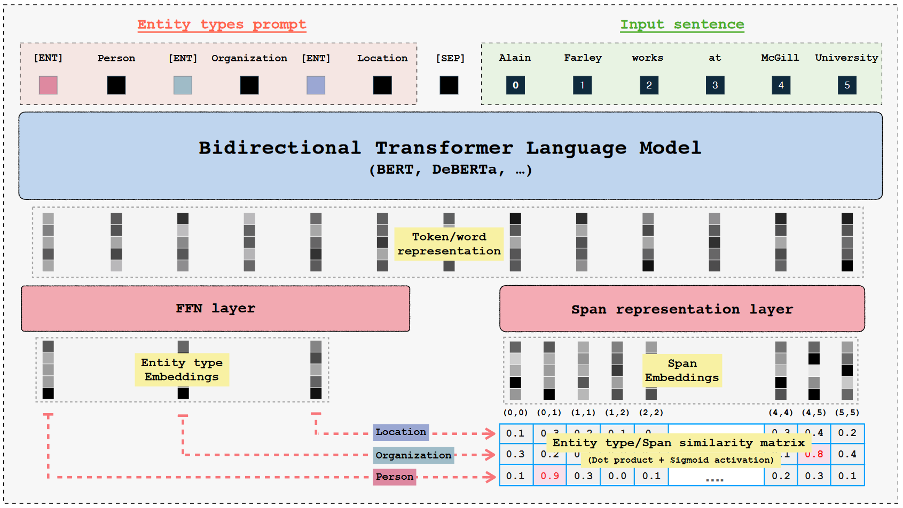

GLiNER: Generalist Model for Named Entity Recognition using Bidirectional Transformer
完成时间：2023-12-07
来自：ACL 2023
题目：《GLiNER：使用双向转换器进行命名实体识别的通用模型》（zero-shot NER）
代码地址：https://github.com/urchade/GLiNER
存在的问题：
1. 使用自回归语言模型，逐词生成，使效率变慢
2. 参数过多，在计算量受限的场景中使用会有限制
3. NER的任务是在几个解码步骤中完成的，没法并行执行多个实体类型的预测
不依赖大型自回归模型，将NER任务视为实体类型嵌入与潜在空间中的文本跨度表示进行匹配，而不是作为生成任务。既解决了自回归模型的可扩展性问题，并且允许双向的上下文处理，从而能够实现更丰富的表示

使用实体类型prompt（每个实体被一个学习到的标记 [ENT] 分隔开） + 文本作为输入，通过BiLM，输出每个token的表示，然后将表示传递到FFN中，同时将输入的token表示传递到span representation层，来计算每个span的表示。最后计算实体表示和span表示之间的匹配分数（使用点积和sigmoid激活函数）